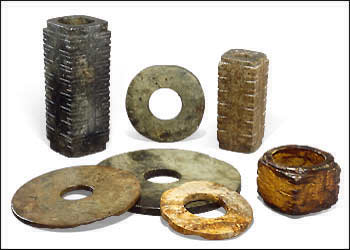

Use of jade bi and cong for ceremonial purposes.
Jade objects were being produced as far back as at least 6000 B.C. It was used for ceremonial weapons and tools, and also carved into ornaments and small animals. From around 2500 B.C. a group of people living in the south of China in Jiangsu province started to produce jades in shapes that continued to be used in China for several thousand years. Bi are jade discs with a circular hole in the middle. They were placed on top of bodies in tombs. Cong are square jade tubes with a circle drilled through the middle. They were placed around bodies in tombs.The original meaning or symbolism behind these shapes is lost now, but the shapes continued to be used in later periods. |